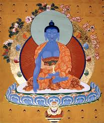

Акшобья является одним из пяти Будд Мудрости в тибетском Буддизме, которые происходят от изначального Ади-будды, согласно древним трактатам философии Буддизма данные пять будд соотносятся с пятью осознаваемыми аспектами реальности или пятью скандхами.
В сутре страны Будды Акшобьи говорится, что Акшобья находится на востоке от Мира Ваджры и имеет управление Восточной Чистой Землёй Абхирати. Его шакти носит имя Лочана, она сопровождается двумя слонами. У Акшобьи тело синего цвета, он наделен атрибутами, среди которых есть колокольчик, три одеяния, драгоценный камень, лотос, молитвенный барабан и меч.
Акшобхья преобразует гнев человека в чистейшую мудрость, также как это делает зеркало. Данная мудрость позволяет видеть предметы такими, какими они являются по своей сути, неразделёнными и неомрачёнными. Зеркало будет отражать и красный цветок, и окровавленный нож такими, какими они есть.